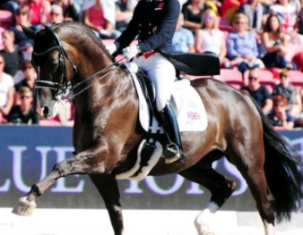

Valegro – Najlepszy Koń Ujeżdżeniowy Wszechczasów
Valegro (ur. 2002) to wałach rasy KWPN, który zdefiniował nowoczesne ujeżdżenie. Pod siodłem brytyjskiej amazonki Charlotte Dujardin, Valegro osiągnął status supergwiazdy, zdobywając szereg tytułów mistrza świata i trzy złote medale olimpijskie (dwa indywidualnie). Charakteryzował się niezwykłą lekkością, płynnością ruchów oraz wyjątkową chęcią do pracy, co pozwoliło mu na perfekcyjne wykonywanie najbardziej skomplikowanych figur Grand Prix.
Rekordy Świata w Ujeżdżeniu
Valegro jest jedynym koniem w historii, który jednocześnie posiadał rekordy świata w trzech najważniejszych konkursach ujeżdżeniowych Grand Prix: Grand Prix, Grand Prix Special oraz Kür (Program dowolny z muzyką). Jego występy były połączeniem technicznej doskonałości i artystycznej ekspresji, co zapewniało mu niewiarygodnie wysokie noty sędziowskie. Jego wynik z 2014 roku w Kür jest jednym z najbardziej niezapomnianych.
Dziedzictwo
Valegro zakończył karierę w 2016 roku i jest uznawany za rewolucjonistę w swojej dyscyplinie. Dzięki swojej popularności, Valegro wyniósł ujeżdżenie na wyższy poziom zainteresowania publicznego. Ucieleśnia ideał jeździectwa: perfekcyjną harmonię między człowiekiem a zwierzęciem, osiągniętą dzięki pozytywnemu treningowi i partnerstwu.
Valegro
